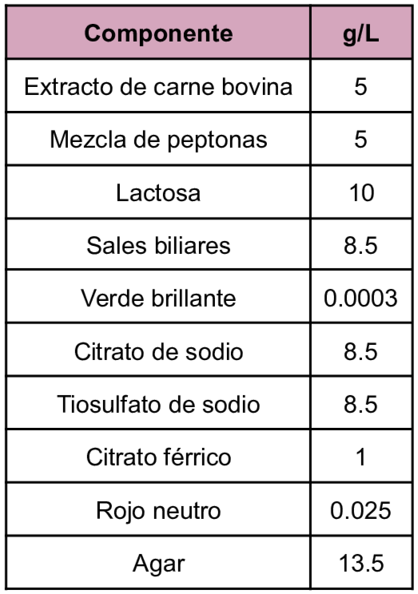
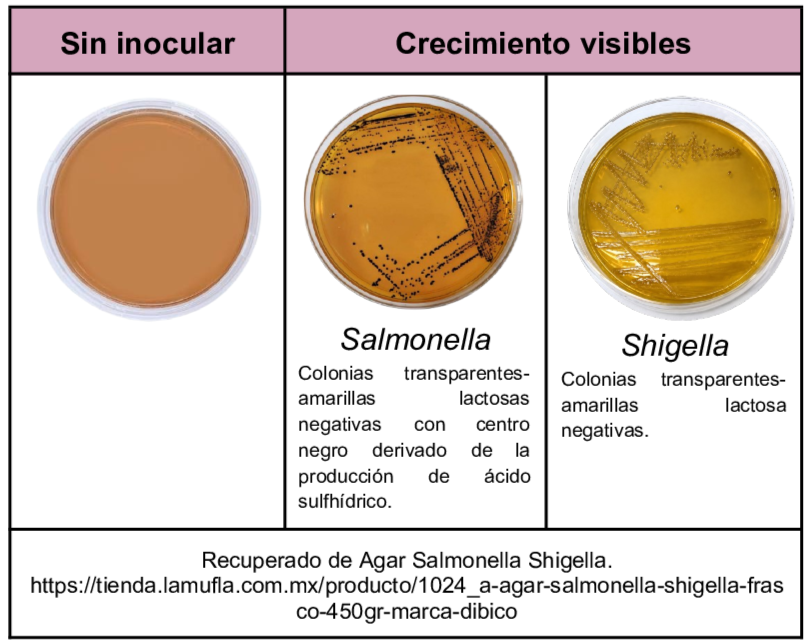

Medio de cultivo de tipo diferencial y selectivo que se utiliza para el aislamiento de microorganismos de tipo
Salmonella y Shigella
este medio es útil para muestras clínicas y alimentos.
Entre los componentes a destacar se encuentran que las sales biliares y el verde brillante inhiben el crecimiento de bacterias Gram + y coliformes excepto
E.coli y Proteus spp.
Por su parte la lactosa es el carbohidrato fermentable, el tiosulfato de sodio permite la formación de ácido sulfhídrico, por último el rojo neutro es el indicador de pH.
Composición

pH a 25°C 7.0±0.2
Resultados Posibles
Se puede esperar un crecimiento para Salmonella como colonias incoloras con centro negro derivada de la producción de ácido sulfhídrico por otro lado si existe la presencia de Shigella se presentan colonias incoloras, ambas son lactosas negativas.

Referencias
MCD Lab (2025) Agar Salmonella Shigella. https://mcd.com.mx/index.php?controller=attachment&id_attachment=26730
Romero, G. (2023) “Guía General de Medios de Cultivo Utilizados en la Industria” [Tesis de Licenciatura, Universidad Nacional Autónoma de México]. Repositorio DGBSDI. https://ru.dgb.unam.mx/server/api/core/bitstreams/30f99386-fb11-4b83-8931-b260bbcd5eef/content